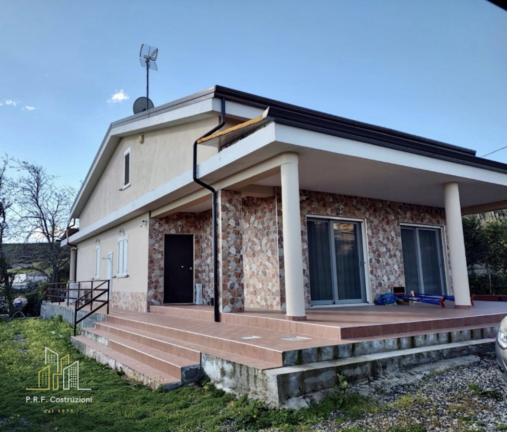
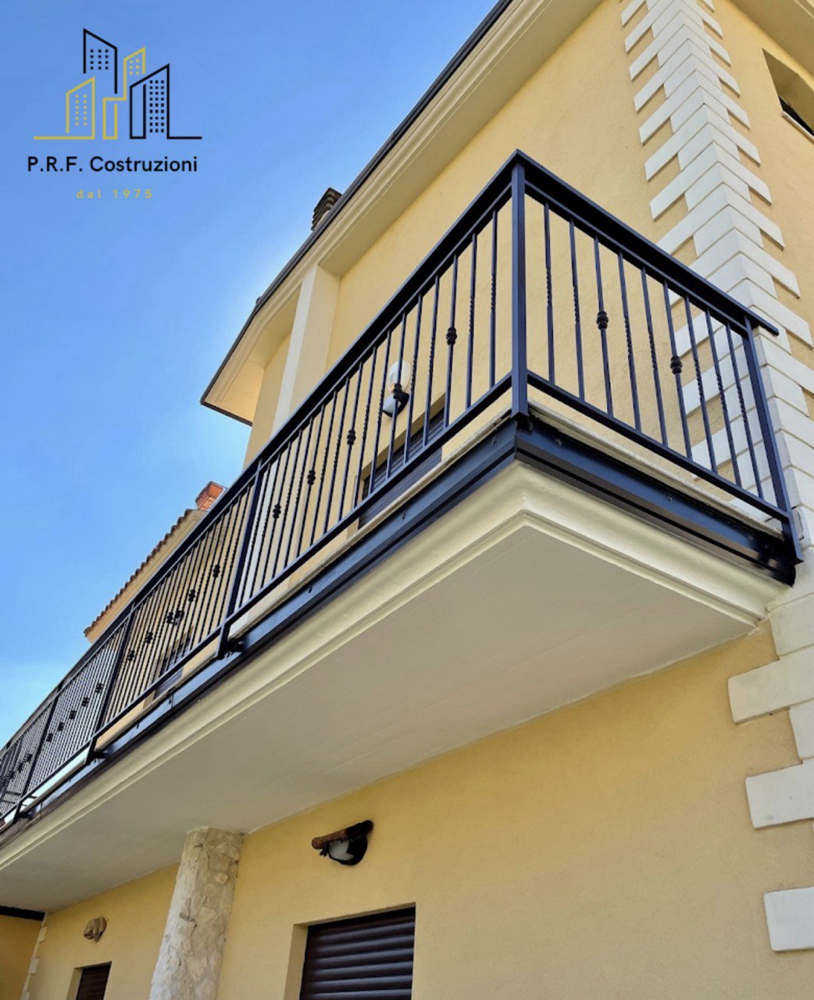
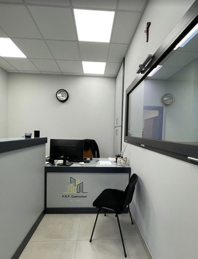

Siamo due fratelli uniti da un sogno: continuare ciò che nostro padre, mastr'Ercole, ha iniziato nel 1975. Con passione, sacrificio e dedizione, ha fondato questa azienda trasformandola in un punto di riferimento nel settore. Oggi portiamo avanti il suo insegnamento, mantenendo gli stessi valori di serietà, qualità e impegno che ci ha trasmesso. Dal 1975 ad oggi, la nostra storia è fatta di famiglia, lavoro e fiducia costruita nel tempo.
Realizziamo abitazioni civili curate in ogni dettaglio, dalla progettazione alla consegna chiavi in mano. Costruiamo case sicure, moderne e pensate per durare nel tempo.
Ci occupiamo della realizzazione di edifici commerciali, industriali e strutture pubbliche, garantendo solidità strutturale, rispetto delle normative e massima efficienza operativa.
Offriamo interventi di manutenzione ordinaria e straordinaria, consolidamenti strutturali e lavori di adeguamento per migliorare sicurezza, efficienza e valore dell’immobile.
Gestiamo l’intero processo costruttivo, coordinando ogni fase: progettazione, pratiche edilizie, lavori e finiture. Un unico referente per un risultato completo e senza pensieri.


